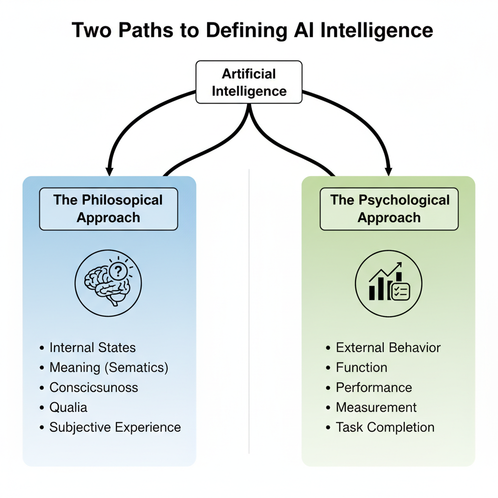
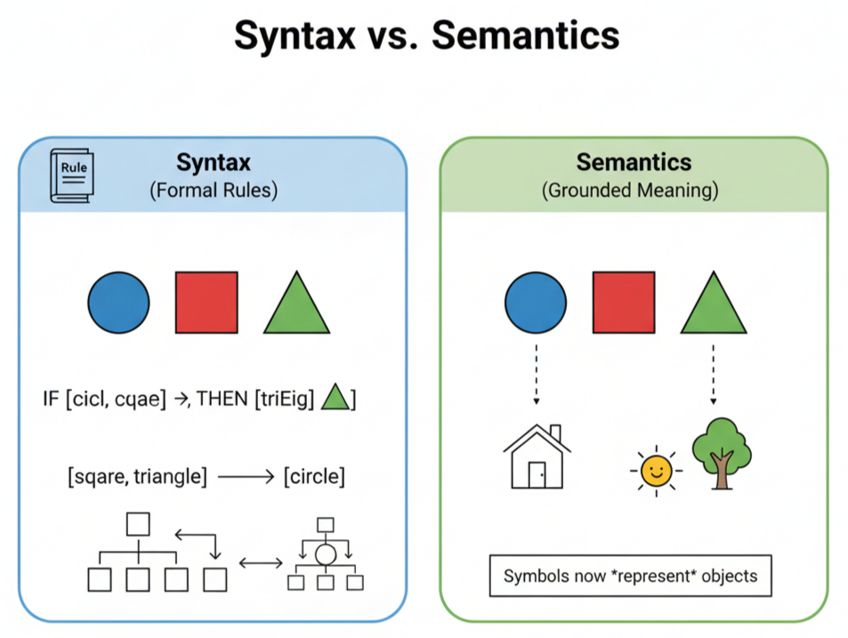
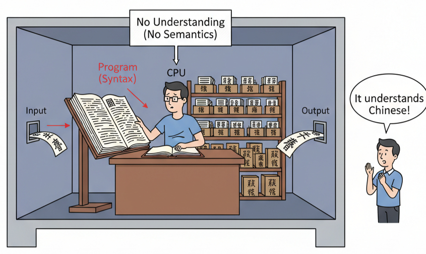
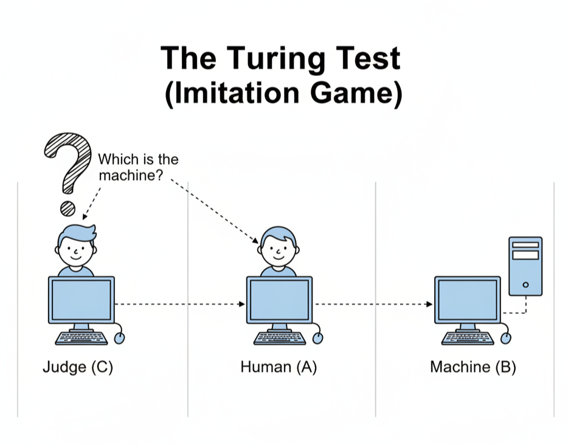

Abstract: This article examines the foundational conflict between philosophy and psychology in the establishment of criteria for machine intelligence. The central argument is that these two disciplines apply fundamentally different and often contradictory standards to artificial systems. Philosophy, particularly the philosophy of mind, frequently demands evidence of internal states, semantic meaning, and subjective experience before it will grant the status of intelligence. It questions whether a machine can truly possess thought or is merely manipulating symbols without awareness. In contrast, psychology has historically tended to focus on external behavior, functional equivalence, and measurable performance as the primary markers of intellect. It asks if a machine can perform tasks that require intelligence in humans, often setting aside questions about the machine's inner world. This paper analyzes the core tenets of these conflicting approaches, using touchstone arguments such as Searle's Chinese Room and the Turing Test to frame the debate. The work demonstrates that these disagreements are not superficial matters of terminology; they arise from contrary first principles about the nature of mind itself. The conclusion is that "artificial intelligence" is not a unified idea but a contested zone of inquiry. The persistent conflict between the fields is a necessary and productive process, forcing a more careful and precise examination of intelligence in both humans and machines.
Keywords: Artificial intelligence, philosophy of mind, cognitive psychology, consciousness, Turing Test, Chinese Room argument, machine intelligence.
Introduction
Modern machines compute with astonishing speed. They generate text. They create images. They answer questions. This has caused great public discussion. People call these systems intelligent. The term is applied with little precision. What does it mean for a machine to be intelligent? The answer changes depending on who you ask. An engineer has one answer; a neuroscientist has another. This paper is about a central conflict. It is a clash between two major fields of human thought. This clash confuses the debate over artificial intelligence. It produces a conversation where different parties use the same words but speak different languages. The debate often moves in circles.
The core issue is a deep disagreement between philosophy and psychology. Each discipline brings its own history, methods, and assumptions to the study of machines. Philosophy, especially the philosophy of mind, asks questions about the nature of thought itself. It is concerned with meaning, intention, and awareness. A philosopher might look at an AI that writes poetry and ask if the machine feels the sorrow it describes. The focus is on the internal, the subjective, the phenomenal. Psychology, particularly cognitive psychology, has a different approach. It often defines intelligence through behavior and function. It seeks to measure performance and model mental processes as information-based operations. A psychologist might look at the same poetry-writing AI and test its ability to use metaphors correctly. The focus is on the external, the objective, the functional. These two fields do not use the same dictionary; they do not use the same yardstick.
Figure 1: The two dominant and conflicting approaches to defining artificial intelligence. The philosophical approach prioritizes internal states and meaning, while the psychological approach focuses on external behavior and performance.
Methodology
The approach taken in this article is a qualitative textual analysis. It is also a comparative study of foundational academic works. This work does not involve experiments with artificial intelligence systems. Instead, its material is the body of writing produced by philosophers and psychologists on the subject of mind and machines. The method is one of careful reading and synthesis. Primary texts from the philosophy of mind and cognitive psychology form the basis of the examination. The goal is to dissect the arguments presented within these texts. We will identify the core assumptions and first principles that guide the thinking in each separate field. The comparative portion of the method places these different sets of criteria side by side. It shows where they directly conflict and where they talk past one another. The aim is not to declare one field correct and the other wrong. The purpose is to show how their different starting points make their conflict a predictable outcome of their disciplinary histories.
Questions of Meaning and Consciousness
The philosophical investigation into machine intelligence begins with a fundamental skepticism about the machine's inner world. The core of the philosophical argument rests on a crucial distinction: the distinction between syntax and semantics. Syntax concerns the rules for manipulating symbols. A computer is a syntactic engine. Semantics, however, concerns meaning. It is the connection between a symbol and what it represents in the world. A human mind deals in semantics. The philosophical charge against artificial intelligence is direct. A machine can have syntax, but it cannot have semantics. It can manipulate the symbol for "rain" but it can never know rain itself.
Figure 2: The distinction between syntax and semantics. Syntax involves the manipulation of symbols according to formal rules, while semantics involves the connection of those symbols to grounded, real-world meaning.
This argument finds its most forceful expression in John Searle's “Chinese Room” thought experiment. A person who does not speak Chinese is locked in a room with a rule book. Questions in Chinese are slipped under the door. The person uses the rule book to find the correct Chinese symbols to send back as an answer. From an external view, the room appears to understand Chinese perfectly. The people outside are convinced they are conversing with a native Chinese speaker.
Figure 3: John Searle's Chinese Room thought experiment. The system successfully processes inputs to produce correct outputs, fooling an external observer. However, the operator inside (the CPU) is merely manipulating symbols using a rule book (syntax) and has zero understanding of the conversation's meaning (semantics).
Searle's point is sharp and clear. The person inside the room does not understand Chinese at any point. They are manipulating formal symbols according to a set of rules. They have the syntax. They have no semantics. The entire system, no matter how convincingly it performs, has no real understanding. It is a simulation of thought, not the occurrence of thought. The purely formal, syntactic nature of computation can never produce the semantic content of real thought. No amount of rule-following can create meaning.
The demand for consciousness is another, perhaps higher still. Philosophers are not just concerned with what a system knows, but with what it experiences. This brings up the problem of qualia—the subjective, qualitative feelings of mental states, like the specific pain of a headache or the particular taste of chocolate. A machine can be programmed to react to damage. It can say "ouch" when struck. But does it feel pain? Does it have the internal, unpleasant experience of pain? Many philosophers hold that a being without such experiences cannot be said to possess a mind in the way humans do.
Behavior, Cognition, and Measurement
The psychological approach to machine intelligence offers a stark contrast to the philosophical one. It is a field grounded in empiricism. Where the philosopher asks about the unseeable inner world, the psychologist often focuses on recordable outer action. This pragmatic stance is perfectly captured in the most famous proposal for judging a machine's mind: the Turing Test. Alan Turing, in his 1950 paper, suggested an “imitation game." A human judge holds a text-based conversation with two unseen participants. One participant is a human. The other is a machine. If the judge cannot reliably tell which is the machine, the machine wins the game. For Turing, a machine that could pass this test should be considered intelligent. He replaced the ambiguous question “Can it think?” with a concrete, testable one: “Can it produce behavior that we call thinking in a human?” The machine's internal state is considered irrelevant to the judgment. The test is about performance.
Figure 4: A schematic of Alan Turing's "Imitation Game," or the Turing Test. A human judge (C) must distinguish between a human (A) and a machine (B) based solely on their text-based conversation. If the judge cannot reliably do so, the machine passes the test.
This functional view of mind has led to a culture of measurement and benchmarking in the field of artificial intelligence. The grand question of the Turing Test was broken down into smaller, manageable problems. Intelligence was viewed as a collection of specific cognitive functions that could be isolated and tested. This created a competitive environment where systems were constantly being improved to achieve higher scores on standardized tests. The victory of IBM's Deep Blue over chess champion Garry Kasparov in 1997, and later Google's AlphaGo in the game of Go, demonstrated that a machine could reach superhuman performance in domains long associated with high-level human intellect.
The Point of Collision: Conflicting Definitions and Goals
The philosopher and the psychologist stand on opposite sides of a conceptual divide. They look at the same machine and arrive at entirely different conclusions. Their foundational assumptions about the nature of mind dictate their evaluation of artificial intelligence. The conflict is not a simple misunderstanding; it is a clash of worldviews. The Turing Test serves as a perfect example of this clash. For a philosopher like Searle, the Turing Test is almost irrelevant. It is a test of a machine's ability to fool a human. A machine could pass the test and, like the person in the Chinese Room, understand nothing at all. The philosopher dismisses the test as a mere trick. Conversely, the psychologist often views philosophical arguments with impatience. The demand for proof of qualia, or subjective experience, is seen as setting a standard that is impossible to meet.
| The Philosophical Approach | Psychological Approach | |
|---|---|---|
| Core Question: | Does it understand? | Does it work? |
| Primary Criterion: | Internal semantic states & consciousness. | External behavioral performance. |
| Key Evidence: | Argument and thought (e.g., Chinese Room). | Empirical tests and benchmarks (e.g., Turing Test, game performance). |
| View of 'Learning': | Acquisition of genuine concepts and meaning. | Measurable improvement on a task via data processing. |
| Ultimate Goal: | Creation of a genuine, conscious mind. | Creation of a useful, functional tool. |
Figure 5: A summary of the contrasting criteria for AI from philosophical and psychological perspectives.
Conclusion
The examination of the philosophical and psychological approaches to machine intelligence reveals a deep and persistent divide. The conflict is over the very definition of thought. The philosopher demands evidence of an internal life. The psychologist focuses on function and behavior. This fundamental disagreement demonstrates that the term “artificial intelligence" is not a single concept. It is a contested term. The same machine can be hailed as a triumph of functional intellect by one group and dismissed as a mindless automaton by another.
A more productive path forward does not involve seeking a grand resolution to this long-standing debate. It requires greater precision in language. Researchers, critics, and builders of these systems must be clearer about the specific quality they are discussing. Are they building a system for functional intelligence, defined by its capacity to solve a specific problem efficiently? Are they testing for behavioral intelligence, defined by the machine's ability to act in a way that is indistinguishable from a human? Or are they making claims about phenomenological consciousness? Adopting this more careful vocabulary would not end the disagreement. It would, however, clarify the terms of the debate.
Finally, this interdisciplinary conflict, while frustrating, is ultimately productive. The philosopher's persistent questions about meaning prevent a shallow form of functionalism from becoming the default view. The psychologist's commitment to measurement and objective benchmarks prevents the conversation from drifting into pure speculation. Each field serves as a necessary check on the other. This enduring conflict forces a continuous and difficult examination of our own assumptions. We build machines to think, and in doing so, we are forced to confront our own divided and uncertain ideas about what it means to be a thinking being.
References
- Block, N. (1978). Troubles with functionalism. Minnesota Studies in the Philosophy of Science, 9, 261-325.
- Dennett, D. C. (1991). Consciousness explained. Little, Brown and Co.
- Fodor, J. A. (1975). The language of thought. Harvard University Press.
- Foucault, M. (191969). L'archéologie du savoir [The archaeology of knowledge]. Éditions Gallimard.
- Jackson, F. (1982). Epiphenomenal qualia. The Philosophical Quarterly, 32(127), 127-136.
- Kuhn, T. S. (1962). The structure of scientific revolutions. University of Chicago Press.
- Miller, G. A. (1956). The magical number seven, plus or minus two: Some limits on our capacity for processing information. Psychological Review, 63(2), 81–97.
- Nagel, T. (1974). What is it like to be a bat? The Philosophical Review, 83(4), 435-450.
- Neisser, U. (1967). Cognitive psychology. Appleton-Century-Crofts.
- Newell, A., & Simon, H. A. (1972). Human problem solving. Prentice-Hall.
- Putnam, H. (1967). Psychological predicates. In W. H. Capitan & D. D. Merrill (Eds.), Art, mind, and religion (pp. 37–48). University of Pittsburgh Press.
- Searle, J. R. (1980). Minds, brains, and programs. Behavioral and Brain Sciences, 3(3), 417-457.
- Silver, D., Huang, A., Maddison, C. J., Guez, A., Sifre, L., van den Driessche, G., et al. (2016). Mastering the game of Go with deep neural networks and tree search. Nature, 529(7587), 484-489.
- Skinner, B. F. (1957). Verbal behavior. Appleton-Century-Crofts.
- Turing, A. M. (1950). Computing machinery and intelligence. Mind, 59(236), 433-460.